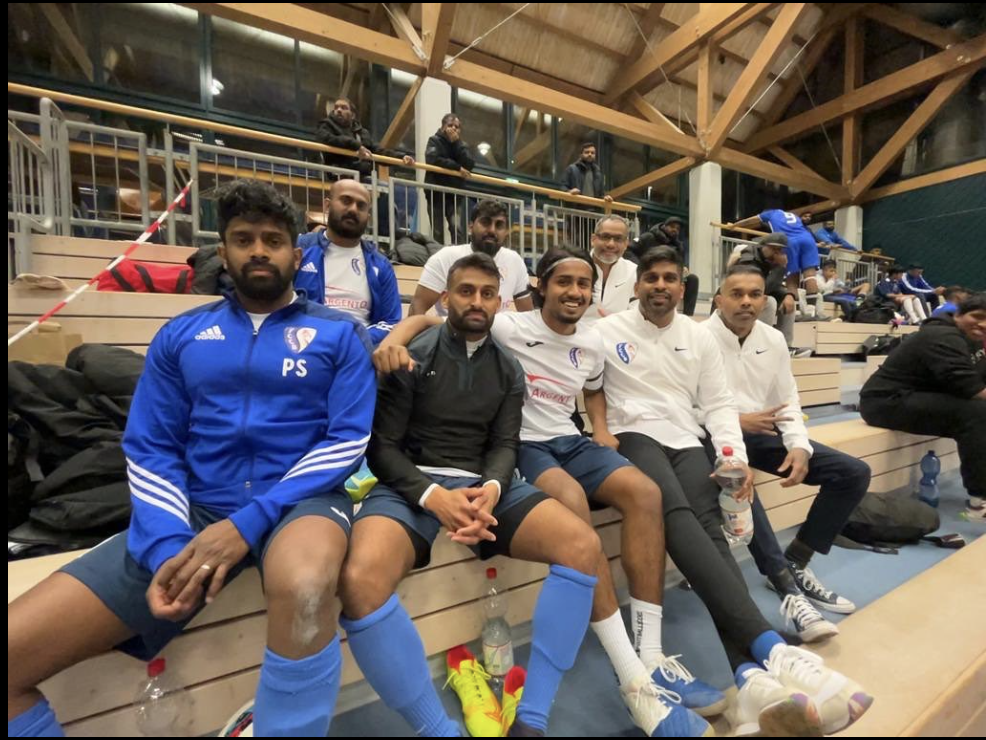

Unser Management
Informationen über das Management des FC City Boys Zürich.
- Gracian Jacomuthu - Präsident
- Thilipan Thiyagarajah - Vize-Präsident/Trainer
- Sutharshan Rajanayayagam - Trainer
- Jegan Jeevaratnam - Sportmanager/Trainer
- Lampotharan Varathalingam - Marketing/Trainer
- Suresh Srikanthan - Co-Präsident/Mentor
Unser Managementteam besteht aus erfahrenen und engagierten Personen, die den Verein leiten und weiterentwickeln. Gracian Jacomuthu führt den Verein als Präsident mit großer Leidenschaft und Weitsicht. Thilipan Thiyagarajah, unser Vize-Präsident und Trainer, bringt viel Fachwissen und Erfahrung in die sportliche Leitung ein. Sutharshan Rajanayayagam unterstützt das Team als Trainer und motiviert die Spieler zu Höchstleistungen. Jegan Jeevaratnam, unser Sportmanager und Trainer, kümmert sich um die organisatorischen und strategischen Belange des Vereins. Lampotharan Varathalingam ist für das Marketing zuständig und sorgt dafür, dass unser Verein in der Öffentlichkeit gut repräsentiert wird. Suresh Srikanthan, unser Co-Präsident und Mentor, steht dem Team mit Rat und Tat zur Seite. Gemeinsam setzen sie sich dafür ein, dass der FC City Boys Zürich erfolgreich bleibt und weiter wächst.
Lizenziert von fccityboyszh